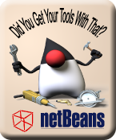

The Developer Cloud: Netbeans 6.7 + Kenai
One of the many interesting things we've been working on lately is the Developer Cloud. There are two major components to it. One is the cloud infrastructure itself: Kenai a much-more-than-a-forge collection of developer facilities that allows you to assemble project areas from a selection of services that range from several SCM systems, bug management systems, wikis and forums. There's a lot more stuff in the pipeline for Kenai, but it's pretty impressive already. The other major component is the tool support that is showing up in NetBeans 6.7. The beta was just released. I've been running the "dailies" for quite a while now. It's real impressive: there's a lot more to NB 6.7 than the developer cloud, but the cloud support is the standout feature. We're just beginning, but it's already transformed the way I work.If you're one of those neolithic vi users, clinging to the banging-together of rocks: Stop! Go to NetBeans now!
| April 29, 2009 |